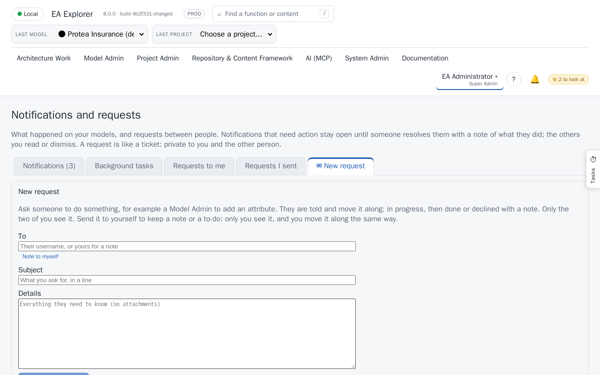

Send a request to someone
For: Practising architects
Ask a person to do something, and follow it.

#/notifications/newWhy do this
A request in EA Explorer is tracked: the person sees it in their list, and you see whether it is done.
EA Explorer covers a lot of ground. A few habits (search, help on every screen, your own requests and pins) make it feel smaller and get you to your work faster.
In TOGAF terms: General use of the tool, across every part of the Architecture Repository. See EA Explorer and the TOGAF Standard.
The goal: You ask someone for something and can follow it.
Steps
- Open Home › Requests › New request.
- Who, what and by when; Send.
- Follow it in Requests I sent.